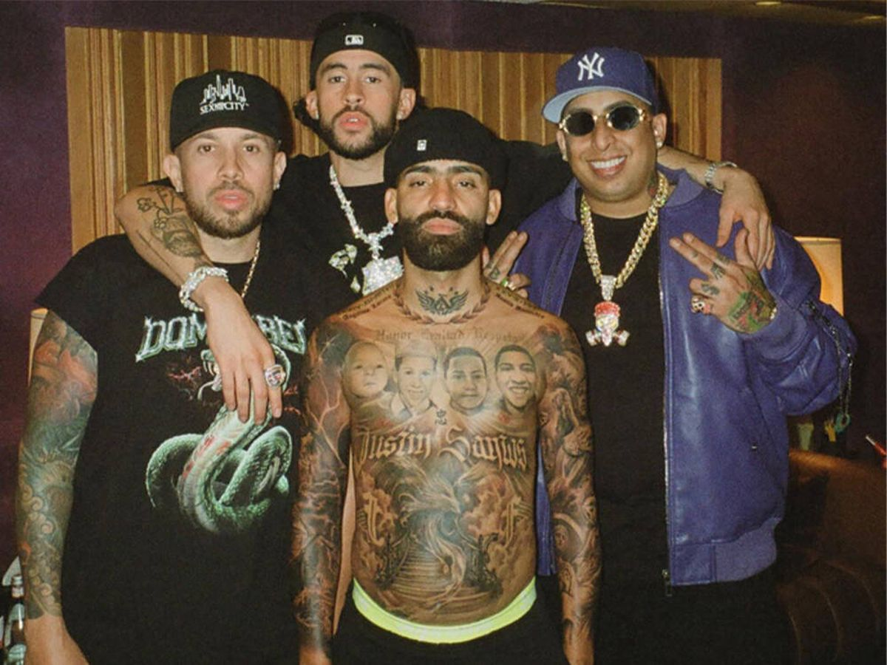
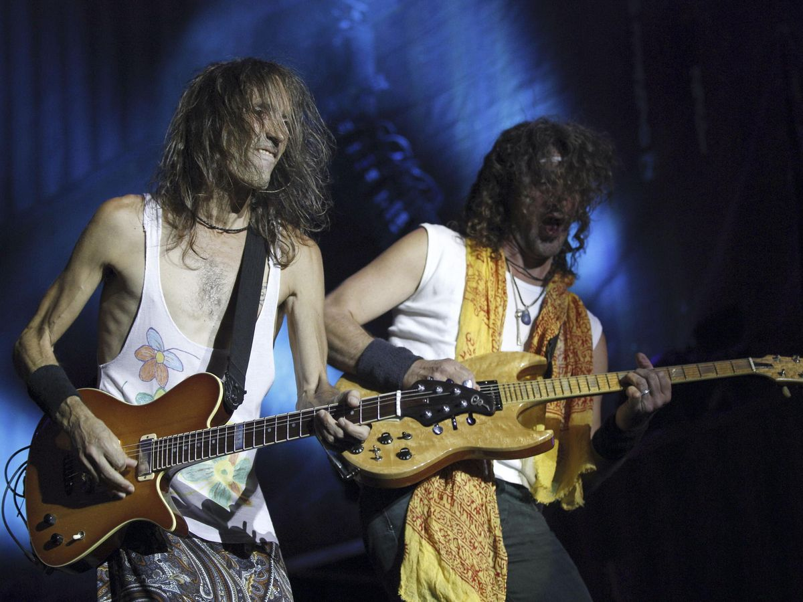

La música que se escucha hoy en día varía significativamente según la región, los gustos personales y las tendencias culturales. Sin embargo, algunos géneros y estilos populares en la música contemporánea incluyen: Pop, Hip-Hop, Reggaetón, Electromica, etc.
A continuación les mostraremos los géneros que más está sonando actualmente y los cuales estan revolucionando la industria de la música.
El género urbano, también conocido como música urbana, es un término que abarca una amplia variedad de estilos musicales que surgieron principalmente en entornos urbanos y que reflejan las experiencias, la cultura y las realidades de la vida en la ciudad. Este género abarca una amplia gama de estilos, incluyendo el reggaetón, el rap, el hip-hop, el trap, el dancehall, entre otros. Este genero es conocido actualmente como una de las industrias más potentes de la musica del siglo XXI, es por eso que registra nuevos records dia a dia. A continuacion les mostraremos una grafica con los oyentes mensuales de los artistas más influyentes.
| Artista | Ranking Mundial | Oyentes mensuales |
|---|---|---|
| Bad Bunny | 3º | 79,9 M |
| Shakira | 6º | 65,8 M |
| Karol G | 16º | 56,8 M |
| Daddy Yankee | 19º | 54,2 M |
| J Balvin | 29º | 51,6 M |
A lo largo de la historia de la musica en españa, se han ido relevando diferentes tipois de musica segun la epoca en la que se vivia. por ejemplo actualmente predomina la musica del genero urbano que como anteriormente habiamos explicado es el genero que esta sonando mundialmente. Sin embargo ha habido muchos otros generos pos cuales han sido relevantes a lo largo de la historia.
El flamenco es un género musical, danza y expresión artística que tiene sus raíces en la cultura gitana del sur de España,
particularmente en las regiones de Andalucía, Extremadura y Murcia. Se caracteriza por su intensidad emocional,
sus ritmos complejos y su profunda conexión con la cultura y la historia española.El flamenco ha evolucionado a lo largo de los siglos,
y ha sido influenciado por diversas culturas y tradiciones, incluyendo la árabe, judía, gitana y española.
Es considerado uno de los elementos más importantes de la cultura española. Alguno de los artistas más reconocidos del genero serian
Diego el Cigala o Lola Flores.
El rock español es un género musical que se desarrolló en España a partir de la década de 1950, influenciado principalmente por el rock and roll estadounidense y el rock británico.
A medida que el género evolucionó, surgieron numerosas bandas y artistas españoles que contribuyeron a darle una identidad única y distintiva.
En la década de 1980, el rock español experimentó un auge significativo con la Movida Madrileña,
un movimiento cultural y contracultural que surgió en Madrid y que trajo consigo una explosión de creatividad en la música, el arte, el cine y la literatura.
Algunos de los grupos más reconocidos en el rock español serian Extremoduro o
Estopa.

El rap español es una variante del género musical rap que se desarrolló en España a partir de finales de los años 80 y principios de los años 90.
Se caracteriza por el uso de rimas y ritmos hablados sobre bases musicales, generalmente acompañados por un fuerte contenido lírico y social.
El rap español aborda una amplia gama de temas, que van desde las experiencias personales y las reflexiones sociales hasta la crítica política y
la denuncia de la injusticia. Al principio, el rap español estaba influenciado principalmente por el rap estadounidense,
pero con el tiempo ha desarrollado su propio estilo distintivo y ha incorporado elementos de la cultura y la música españolas.
Algunos de los artistas más relevantes en España serian Violadores del verso o
C.Tangana.
En España, el reggaeton ha experimentado un gran éxito y ha sido adoptado por una amplia audiencia, especialmente entre los jóvenes.
Se ha convertido en un género musical muy popular en las discotecas, fiestas y en la radio.
Artistas y grupos de reggaeton españoles, así como artistas latinoamericanos, han contribuido al crecimiento y la difusión del género en el país.
El reggaeton español a menudo presenta letras en español que abordan una variedad de temas, desde el amor y el romance hasta la fiesta y la vida urbana.
Los ritmos pegajosos, los bajos profundos y las letras pegadizas son elementos característicos de muchas canciones de reggaeton.
Artistas como Bad Gyal, Quevedo o
Juan Magan han sido muy relevantes para la industria del reggaetón en España.